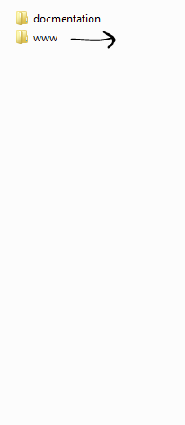
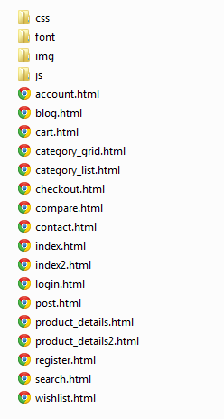
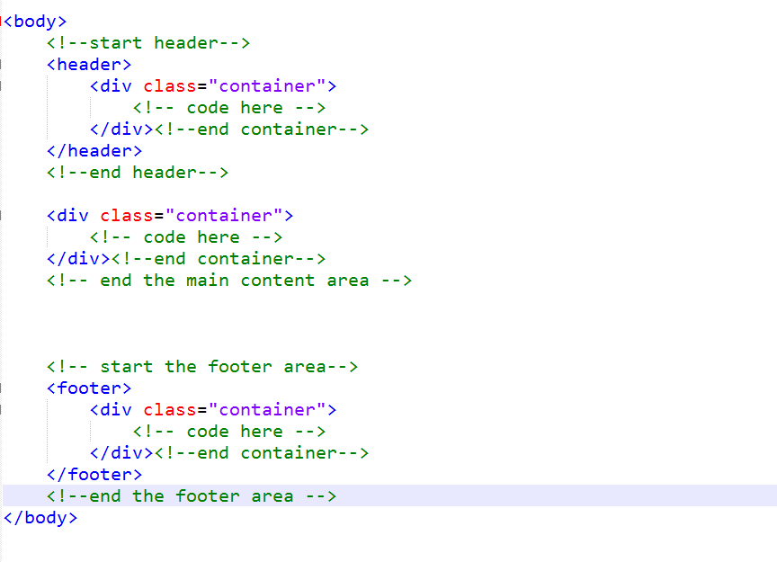
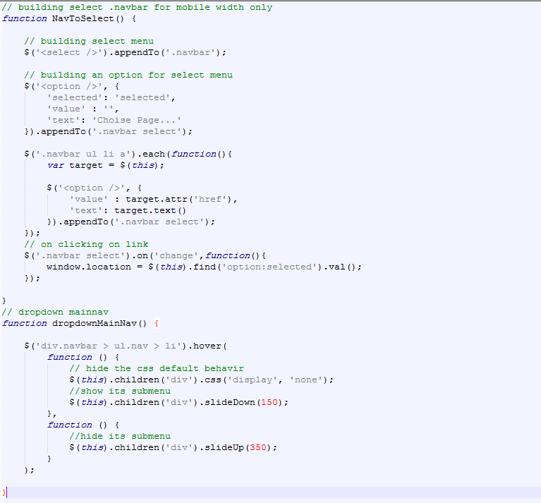

“ShopFine” : Documentation by “Ahmedchan”
“SHOPFINE”
Created: 3/20/2013
By: ahmedchan
Email: mr.ahmedsaeed1@gmail.com
Thank you for purchasing my Template. If you have any questions that are beyond the scope of this help file, please feel free to email me via my user page contact form here. Thanks so much!
Table of Contents
- Description
- File Structure
- HTML Structure
- CSS Files and Structure
- JavaScript
- jQuery Plugins Used
- Sources and Credits
- Customize your latest tweets
A) Description - top
This template is designed to be Responsive and eCommerce template, It can serve the purpose of all eCommerce sites ( 'opencart', 'magento', 'WooCommerce', 'prestashop', 'shopify' ) and other purposes.
However,as I included an 'Home', 'blog', 'post', 'contact' and 'view product list and grid', 'product page', 'cart page', 'wishlist page', 'account', 'compare' 'login and register'...etc.
A+) File Structure - top
I have arranged the template into folders so, it's easy for you to navigate the file easily. the Structure as below:
 b) HTML Structure - top
This theme is a RESPONSIVE theme based on bootstrap css framework. All of the information within the main content area is nested within a div with an id of "mainContainer". The sidebar's (column #2) content is within a aside tag. The general template structure is the same throughout the template. Here is the general structure.
B) CSS Files and Structure - top
I'm using only the main three CSS files in this theme for every page. The first one is a ('bootstrap.css'), it's generic reset file and it's collection of classes. that contains a lot of formating for general divs, also has global reset that all the browsers need them, the second one is ('customize.css') and in there we override some of the styling that bootstrap aplied, so we atchive our style, such as anchor tag colors, font-sizes, the third one is (style.css) and it has header and footer styling for all the pages and all other elements etc.
C) JavaScript - top
This theme imports three kind of Javascript files.
- jQuery (the library * connected directly with google server *)
- jQuery plugins.
- My custom scripts (main.js / contact.js)
- jQuery is a Javascript library that greatly reduces the amount of code that you must write.
- Most of the animation in this site is carried out from the customs scripts. There are a few functions worth looking over.
for example in custom.js file you'll find the functions that controlls the topnav and mainnav on tablets and phone (responsive navigation) and dropdown on main navigation on desktop size like so...

- In addition to the custom scripts, I implement a few "tried and true" plugins to create the effects. This plugin is packed, so you won't need to manually edit anything in the file. The only necessary thing to know is how to call the method. For example see the fancybox plugin and flexsliders and tooltip and display your tweets plugin:
// flexslider on home page function flexSlideShow() { $('.flexslider').flexslider({ animation: "slide", slideshowSpeed: 4000, directionNav: false, pauseOnHover: true, directionNav: false }); } // link fancybox plugin on product detail function productFancyBox() { $(".fancybox").fancybox({ openEffect : 'none', closeEffect : 'none' }); } // display your twiter feed here $(function(){ $(".tweet").tweet({ username: "seaofclouds", join_text: "auto", avatar_size: 0, count: 2, auto_join_text_default: "we said,", auto_join_text_ed: "we", auto_join_text_ing: "we were", auto_join_text_reply: "we replied to", auto_join_text_url: "we were checking out", loading_text: "loading tweets..." }); });//end
D) jQuery Plugins Used - top
I've used the following jQuery Plugins as listed.
- jQuery flixslider Plugin : http://jquery.malsup.com/
- jQuery cycle Plugin : http://jquery.malsup.com/
- jQuery cookie Plugin : http://archive.plugins.jquery.com/project/Cookie
- jQuery FancyBox-2 Plugin : http://fancyapps.com/fancybox/
- jQuery seaofclouds-tweet Plugin : http://fancyapps.com/fancybox/
in addation to that there is one scripts for you to change backgrounds. and toggle bettween wide and boxed view
note: All the jQuery plugins in the bottom of every page.
E) Sources and Credits - top
I've used the following images, icons or other files as listed.
- general styling By : Bootstrap/
- Icons By font Awesome : http://fortawesome.github.com/Font-Awesome/
- Social Icons by: iconsweets2.com
- Fonts from google server: http://www.google.com/webfonts
- Backgrounds pattren by subtle satterns: http://subtlepatterns.com
F) Customize your latest tweets - top
all you have to do is to change your twitter username instead of seaofclouds username, then change the tweets count as you like to display, in the (main.js) file
See the following image and you'll understand what I mean...

change "seaofclouds" : to your twitter username.
change "count" : to the number of feeds you want to display.
Once again, thank you so much for purchasing this theme. As I said at the beginning, I'd be glad to help you if you have any questions relating to this theme. No guarantees, but I'll do my best to assist. If you have a more general question relating to the themes on ThemeForest, you might consider visiting the forums and asking your question in the "Item Discussion" section.
Please, if you like the theme, Make your Rate in your download page on themeforestahmedchan